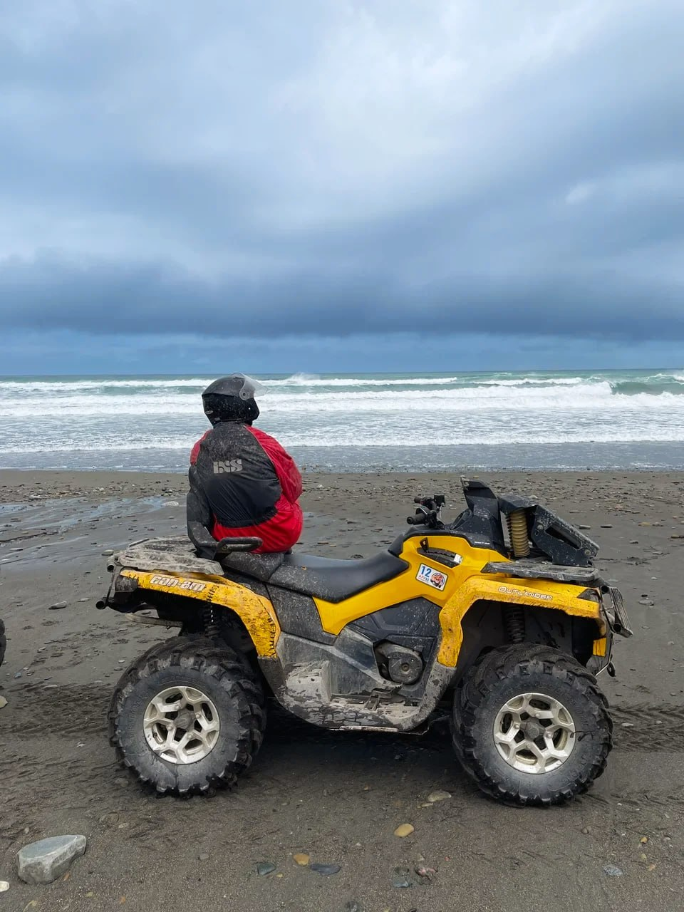

Обо мне

Всем привет, меня зовут Артём, мне 29 лет, я начинающий
frontend разработчик из Москвы. В 2015 году закончил РГСУ по
специальности инженер-программист, но по жизни сложилось
так, что я и не инженер и не программист) На данный момент я
являюсь руководитем и генеральным директором компания по
оказанию услуг проектирования и монтажа слаботочных систем.
Стрессоустойчив, спокоен, пунктуален с хорошим чувством
юмора и самоиронии.